渲染按人物目标身高和450 × 1300 mm有效跑带目标组织比例，透视及生成细节仍有误差。显示屏独立转轴、儿童中间锁止档位和竖放脚座为本轮结构提案，折叠尺寸、完整干涉与锁止需要装配模型继续校核。
Option 1
宽扁立柱与连续肩部
承接11月7日模型。方形尾端、全域跑台、下置电机；尾部转轴按用户纠正由跑带包覆。
 对照原图 ↗
对照原图 ↗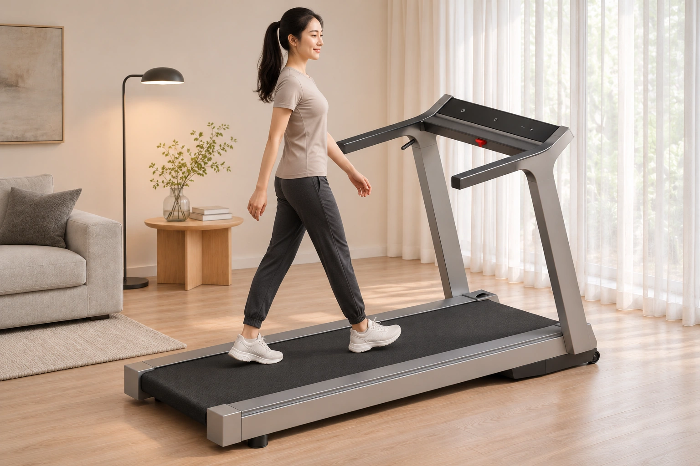
平放使用
170 cm 成年人 · 全域跑台
打开大图 ↗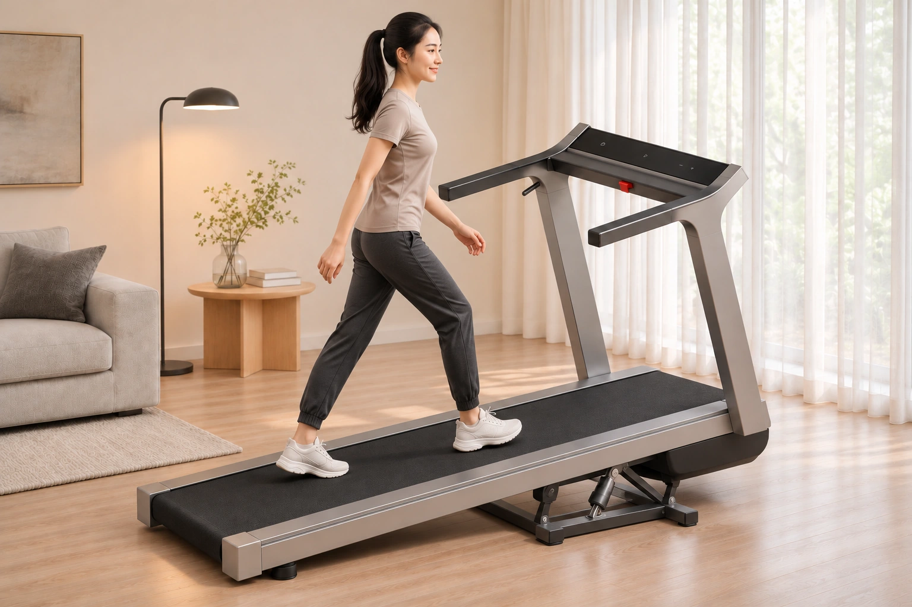
爬坡使用
170 cm 成年人 · 下部升降支撑为结构提案，图中坡度为近似表达
打开大图 ↗主折叠路径
显示屏绕新增独立横轴翻入，扶手回折到立柱旁，再让双立柱绕机头底轴向尾部落下。显示屏、扶手、立柱各自保持连接。
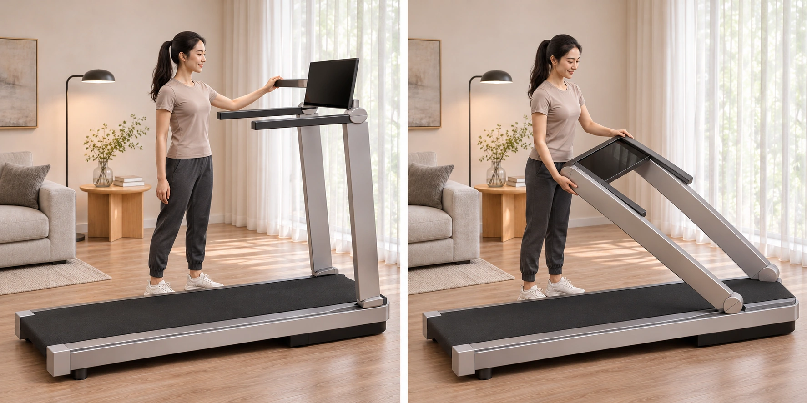
主折叠 · 翻屏与中途收合
左图显示屏独立翻转；右图扶手回折、立柱沿原机头底轴收下
打开大图 ↗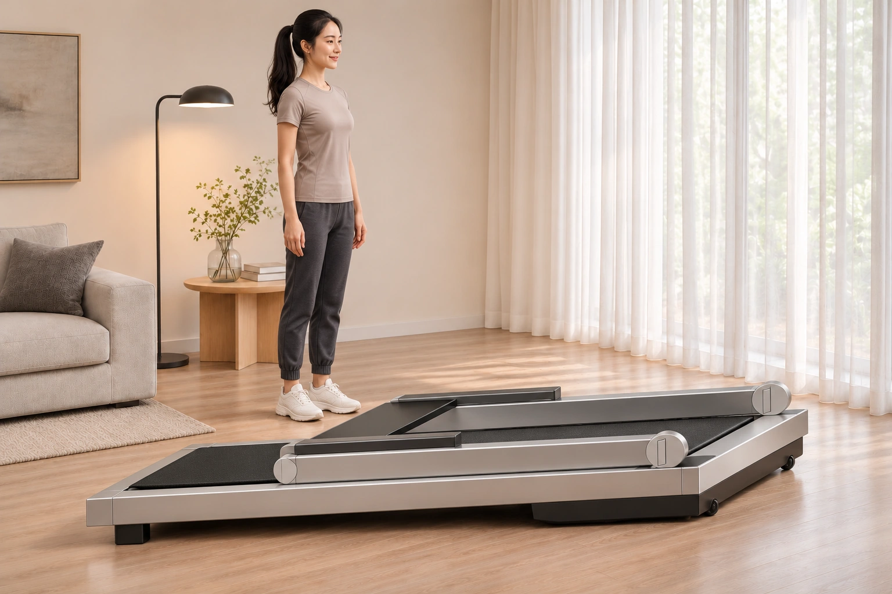
主折叠 · 折平终态
显示屏收平，扶手回折叠放；成年人站在机旁作尺度参照
打开大图 ↗备用折叠路径
沿用此前备用思路，上部扶手与面板作为一组翻转让位，再收下立柱。扶手向尾部延伸，面板保留安装倾角，收纳包络较长。
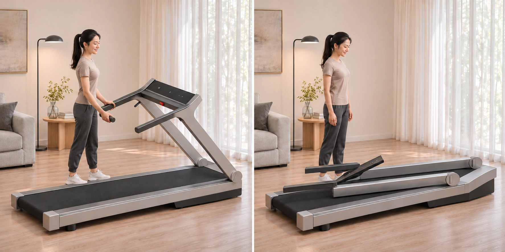
备用折叠 · 整组翻转与终态
上部组件整体让位；最终面板保持倾角，扶手沿跑台方向展开
打开大图 ↗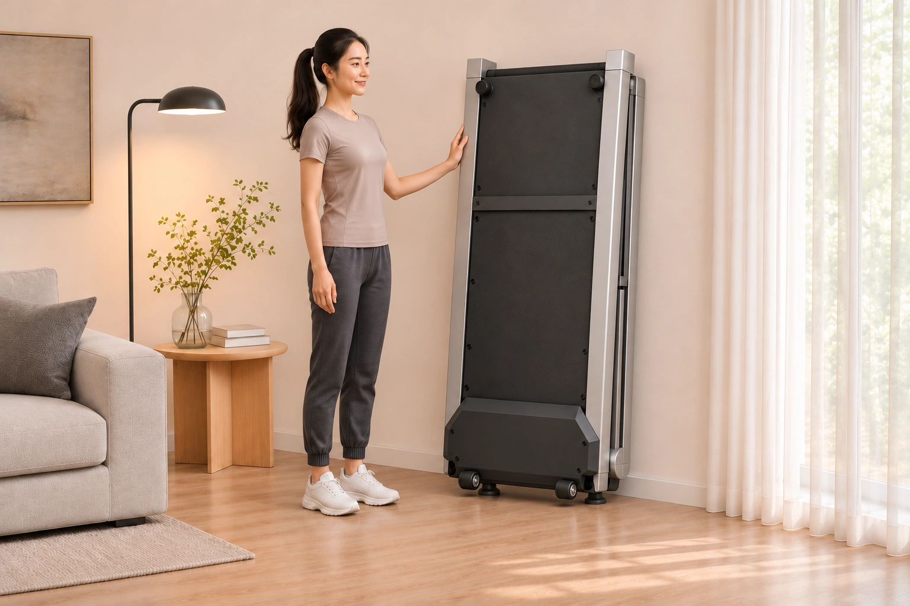
竖放收纳
跑面朝墙、机底朝房间；固定软脚承地、搬运轮离地的布置设想
打开大图 ↗Option 2
斜立柱与圆形关节
用户确认11月9日新增图属于第二个 Option。保留斜立柱、上下圆形关节、前伸上部框架和圆弧尾端。
 对照原图 ↗
对照原图 ↗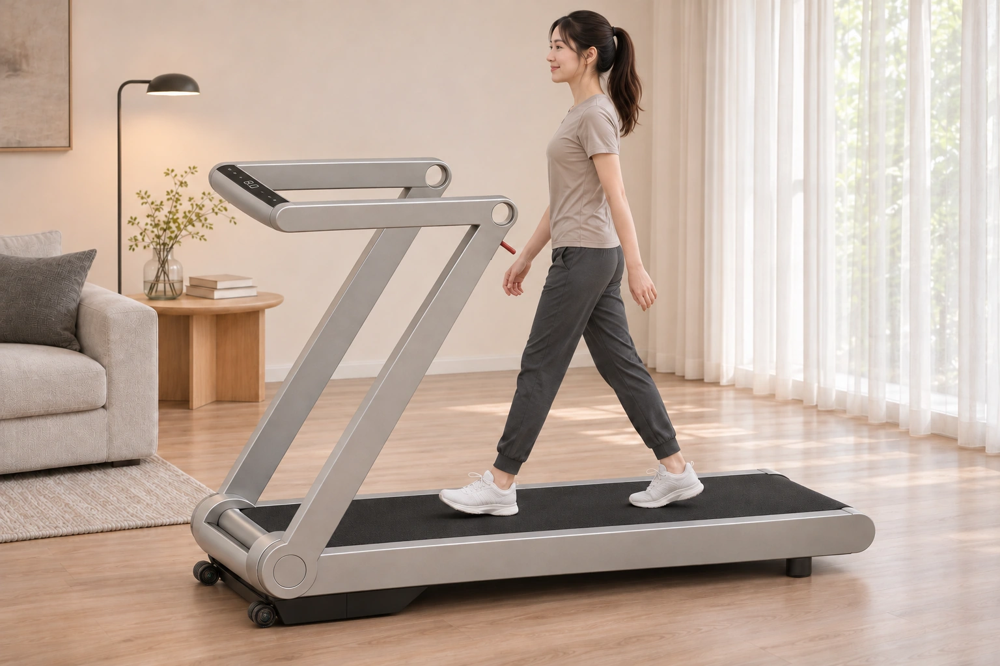
平放使用
170 cm 成年人 · 圆形关节与斜立柱轮廓
打开大图 ↗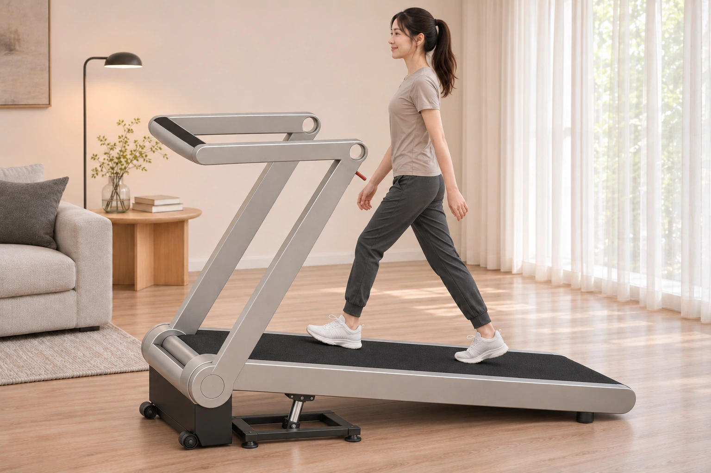
爬坡使用
170 cm 成年人 · 下部升降支撑为结构提案，图中坡度为近似表达
打开大图 ↗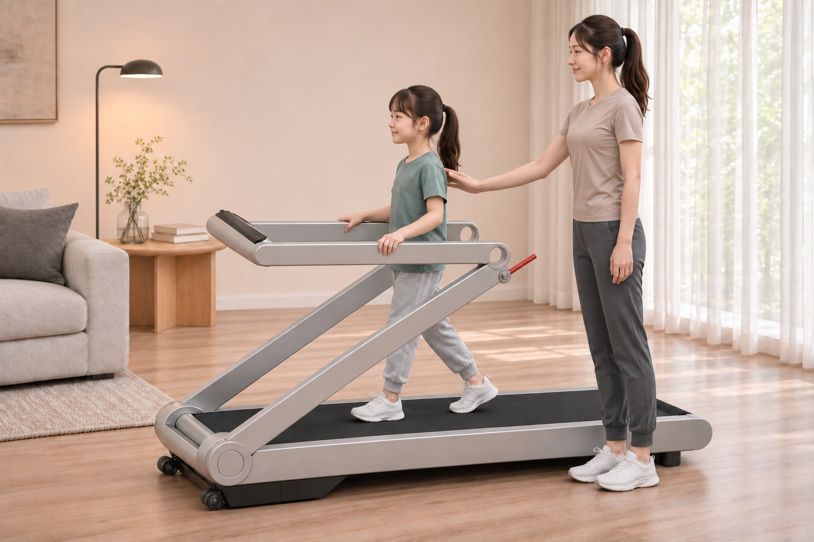
儿童使用状态
120 cm 儿童与170 cm 成人 · 降低立柱、调平扶手的中间锁止档位设想；成人在旁
打开大图 ↗主折叠路径
窄横屏在前横梁处独立翻转，随后上部框架回折到立柱旁，双立柱沿底部圆形关节落下。独立屏轴为本轮新增提议。
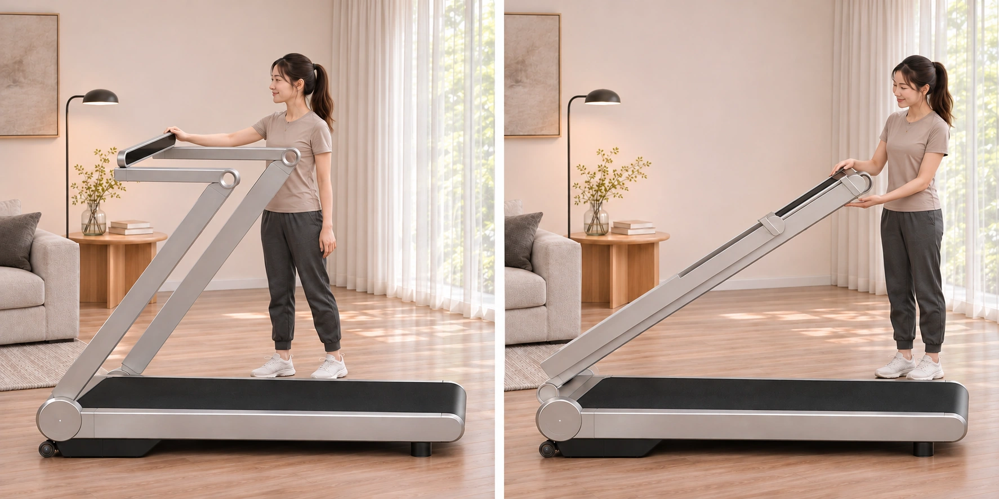
主折叠 · 窄横屏翻转与中途收合
左图窄横屏独立翻折；右图上部框架回折到立柱旁
打开大图 ↗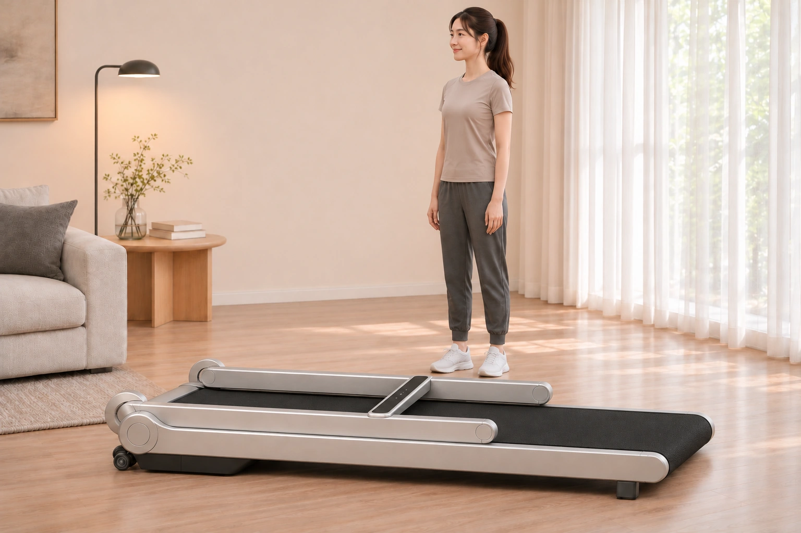
主折叠 · 折平终态
窄横屏收平，圆形关节与双立柱沿跑台叠合；尾端由跑带包覆
打开大图 ↗备用折叠路径
保持横屏与上部框架的原安装关系，由上关节带动整组框架翻转，再沿底轴收下立柱。窄横屏的终态角度与净距仍需模型深化。
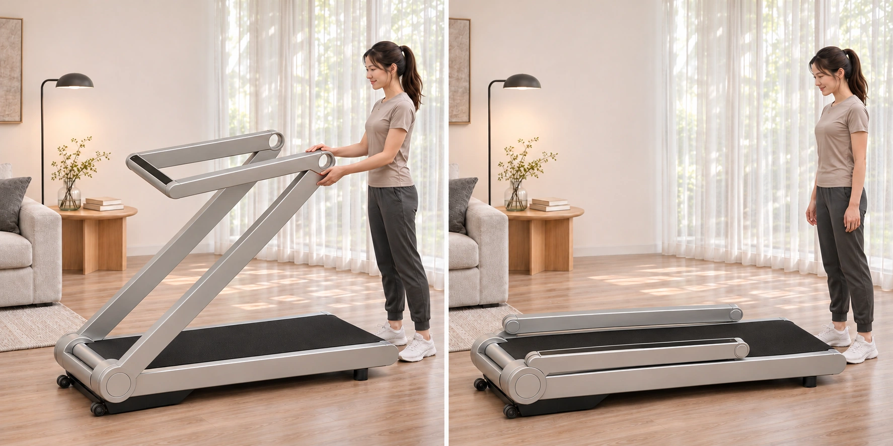
备用折叠 · 整组翻转与终态
通过上下关节收合整组框架；横屏原安装关系保留，终态净距待核对
打开大图 ↗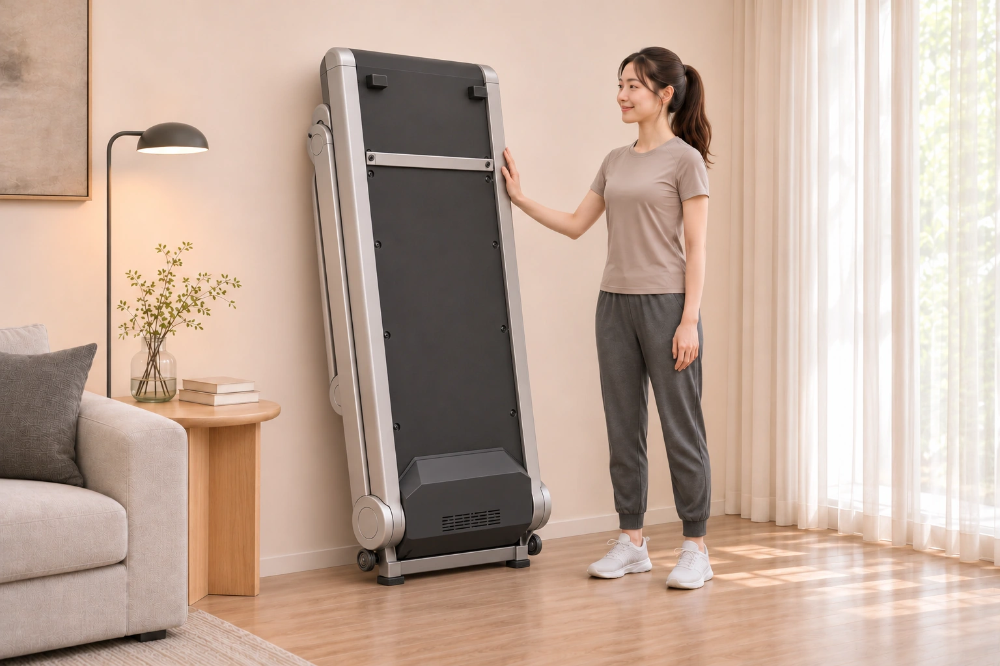
竖放收纳
圆弧尾端朝上，机头朝下；机底外壳及固定脚座为本轮视觉提议
打开大图 ↗Option 3
待补充设计资料。
结构依据与当前校核范围
Option 1 来自11月7日整机、侧面和机底截图；Option 2 来自11月9日新增模型。原图链接放在各组标题旁。
主路径新增显示屏独立横轴，与上部框架转轴、立柱根部转轴配合。备用路径沿用上部组件整体翻转的思路。Option 1 的上部关节表达、Option 2 的屏轴和儿童锁止档位均需结构深化。
辅助姿态模型约束连杆长度和折平终态的纵向、竖向位置，尚未完成实际零件全程三维干涉、走线、锁止受力与竖放稳定性验证。各姿态渲染的局部接缝、外壳和比例仍有差异。
儿童图用于讨论降低扶手后的触达关系，儿童工况与控制限制仍需另行确定。爬坡支撑与机底外壳为视觉提议。